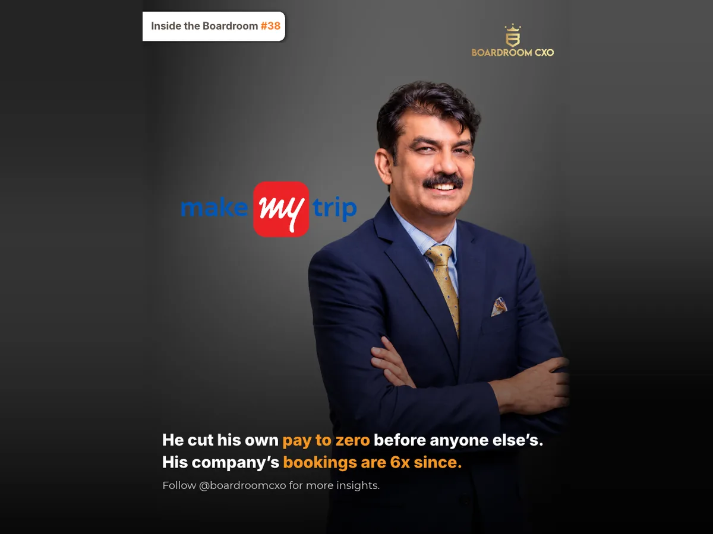

Key Takeaways
- Rajesh Magow was named MakeMyTrip's Group CEO on 11 February 2020, and in the April to June 2020 quarter the company's revenue fell 95.5 per cent, from $141.7 million to $6.4 million, as India's lockdown halted travel.
- Magow and founder Deep Kalra took zero salary from April 2020, about 350 staff (nearly 10 per cent) were let go in June 2020, and in August 2020 the company launched myPartner for offline travel agents.
- In FY26, MakeMyTrip's gross bookings reached a record $10.39 billion, more than six times FY21 in dollar terms, and adjusted operating profit was $188.8 million against a loss of $18.0 million in FY21.
"I guess, I have not experienced a worse disaster in my work life so far."
Rajesh Magow, co-founder and Group CEO of MakeMyTrip, said that to Outlook Business about the months after he took the top job.
He had every reason to. Weeks into his tenure, India's travel business stopped.
How Covid Stopped MakeMyTrip
MakeMyTrip named Magow Group CEO on 11 February 2020, with founder Deep Kalra moving to Executive Chairman. Magow would now run MakeMyTrip, Goibibo and redBus together.
Forty-three days later, on 25 March 2020, India went into lockdown and scheduled domestic flights were suspended. They did not resume until 25 May.
The numbers that followed were brutal. In the April to June 2020 quarter, MakeMyTrip's revenue fell 95.5 per cent, from $141.7 million to $6.4 million. Hotel and holiday bookings almost disappeared.
The full year was not much better. In FY21, gross bookings were $1.64 billion, down about 73 per cent from FY20. Air ticketing bookings fell 72.6 per cent and hotel room nights fell 71.2 per cent.
Who Is Rajesh Magow?
Rajesh Magow is the co-founder and Group CEO of MakeMyTrip, India's largest online travel company. He is a chartered accountant.
He joined MakeMyTrip in its early years and spent long stretches as its finance head. He was CFO from 2006, later also COO, and became CEO of the India business in 2013 before taking the Group CEO role in 2020. As a finance man, he knew exactly what a 95 per cent fall in revenue meant for cash.
MakeMyTrip's Crisis Leadership: Cut From the Top, Then Build
The standard playbook in a collapse is to cut costs as hard as possible and wait for the world to reopen. Magow and Kalra cut too, but they started with themselves.
- Zero salary at the top. In March 2020, Kalra and Magow said they would draw no salary from April 2020. The rest of the leadership team offered to take about 50 per cent less.
- Painful job cuts, done once. In early June 2020, the company let go of about 350 people, nearly 10 per cent of its staff, mainly in businesses it did not expect to come back soon. Those who left kept health cover for their families until the end of the year.
- Pay restored quickly for the rest. Business Today reported that the company restored pay for frontline and mid-level employees from July 2020, and for senior executives from September.
Then, while planes were still grounded, the company started building.
In August 2020, it launched myPartner, a platform that gave small, offline travel agents free access to MakeMyTrip's hotel inventory and technology. Agents who had lost walk-in customers could now sell from a much larger shelf.
The bet underneath was that Indians would travel within India first, by road and to smaller places, before they flew abroad again. That meant more homestays, villas and other alternative stays. Outlook Business reported that alternative accommodation was then about 10 per cent of revenue, with room to grow to 25 per cent.
What MakeMyTrip's Recovery Delivered
The recovery took time, but it came. In FY26, MakeMyTrip crossed $10 billion in gross bookings for the first time, at $10.39 billion. That is more than six times FY21's figure in dollar terms.
Profit followed. Adjusted operating profit, the company's core earnings measure, was $188.8 million in FY26, up 13 per cent on FY25. In FY21, the same measure had been a loss of $18.0 million.
There was one more thing. In June 2021, YourStory reported that MakeMyTrip had paid back the salary that employees had voluntarily given up during the crisis, as an ex-gratia payment. Magow called it "the only fair thing to do".
The Boardroom Lesson: What a Leader Does Inside a Downturn
Every downturn ends. Boards are often judged on how deep they cut. They should be judged on what was still standing, and what had been built, when the market came back.
Every downturn ends. What you did inside it does not.
Magow's sequence mattered. Leaders took the first and largest cut. Job losses were made once, with care. Pay came back as soon as the business could afford it. And new products were launched while competitors were still frozen.
Common Mistakes Boards Make in a Business Collapse
When revenue falls off a cliff, boards tend to make the same three errors.
They cut people before they cut at the top. Staff notice who goes first. When leaders give up pay before asking anyone else to, the people who stay are far more likely to stay committed.
They cut in rounds. Repeated small layoffs keep everyone afraid. One clear decision, made early and explained honestly, lets the rest of the company move on.
They stop building. A crisis is when rivals stop investing. MakeMyTrip used the lockdown months to launch myPartner and lean into domestic stays, and it came out of the pandemic better placed for the new demand.
A Framework for Choosing a Leader for a Crisis
When we brief boards on a leadership search in a business under severe stress, we push for three specific checks.
- Ask what the candidate cut first, and from whom. Leaders who have started cost cuts with their own pay tend to keep their teams through the worst months.
- Look for financial depth in the top job. Magow's years as CFO meant he could read cash, cost and recovery in the same sitting. In a collapse, that skill is worth paying for.
- Test for building, not just surviving. Ask what the candidate launched during their last downturn. A leader who only protected the base may not be the one to lead the recovery.
Why This Belongs in the Boardroom, Not Just the Business Pages
This story sits beside Ajay Bijli at PVR INOX, whose cinema sales fell 92 per cent in a year, and Puneet Chhatwal at IHCL, who kept growing the Taj through the same years. In each case, the pandemic tested not just the balance sheet but the leader's choices inside it.
A crisis shows who a leader is. The recovery shows whether the board chose well.
Sources
- Business Standard (PTI), MakeMyTrip's Deep Kalra, Rajesh Magow to draw zero salary due to COVID-19 impact, March 2020
- Inc42, MakeMyTrip Feels The Covid-19 Squeeze As It Lays Off 350 Employees, June 2020
- YourStory, MakeMyTrip launches myPartner, a dedicated platform for travel agents, August 2020
- Business Today, MakeMyTrip, Droom, BookMyShow roll back salary cuts, November 2020
- MakeMyTrip Limited (SEC filing), MakeMyTrip Limited announces fiscal 2021 fourth quarter and full year results, May 2021
- YourStory, How MakeMyTrip paid back its employees who had taken voluntary pay cuts, June 2021
- Outlook Business, Remaking Of MakeMyTrip, January 2022
- Outlook Business, MakeMyTrip Clocks 13% Rise in Adjusted Operating Profit at $188.8 Million in FY26, May 2026
Related Reading
Ajay Bijli's Sales Fell 92% in a Year. Now 150 Million People Buy His Tickets.
Read → R · 02 Founder Leadership · September 2026Puneet Chhatwal: He Grew the Taj by Owning Less of It
Read → R · 03 Founder Leadership · September 2026Falguni Nayar: Nykaa's Stock Fell, Its Profit Grew Nearly Tenfold
Read →Need a leader who can hold a business together when revenue collapses?
We screen for CEOs and CFOs who have led through a real downturn, cut from the top, and kept building while rivals froze. Brief us on the mandate and we will tell you who the market actually has.
Brief Us on a Mandate See all Finance roles we fill →